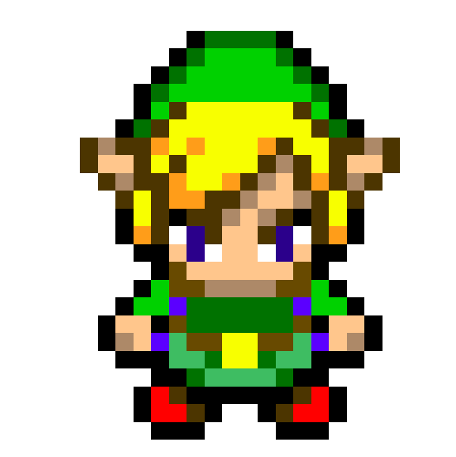
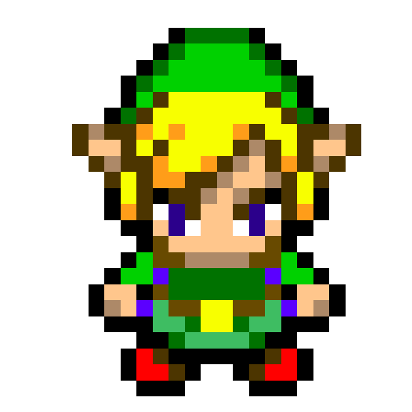
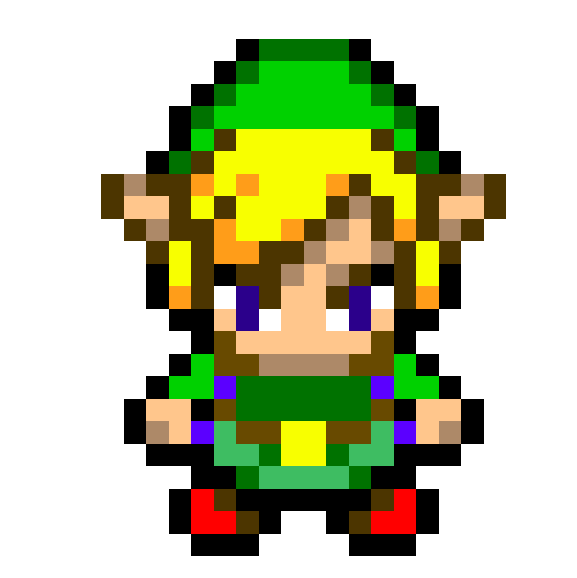

Video games I love
Legend of Zelda
Pokemon
Life is strange



 



![One night, an ominous cloud covers Hyrule, throwing fear into the people. Princess Zelda calls upon her most trusted childhood friend, Link. She wants to check up on the Four Sword, fearing that the seal that imprisoned the evil wind sorcerer Vaati inside of it at the end of Four Swords might have weakened. Inside the castle, they meet up with the gathered six Maidens, whose purpose is to protect Hyrule as well as the Four Sword Sanctuary. With the help of the maidens, Zelda summons a portal to the sanctuary. However, before they get a chance to enter, a dark figure that looks like Link appears. The Dark Link seals away the six maidens and Zelda in a dark crystal before he retreats into the portal leading to the sanctuary. Link is left with no choice but to follow. Arriving at the sanctuary, the dark Link taunts Link into pulling the Four Sword, resulting in Link splitting into four copies of himself. Likewise, the seal on Vaati is broken, and he slowly creeps forward with a maniacal laugh. The four Links do not get a chance to follow the Dark Link before being thrown away from the scene by Vaati's magic. The four Links are awoken by Kaepora Gaebora, who calmly informs them of the situation and what they must do, which is to first rescue the six maidens. Shadow Link, as he calls him, has spread chaos in Hyrule, scorching villages and throwing them into the dark world. Traveling across Hyrule they witness the chaos brought about by Vaati and Shadow Link, and in order to release the dark seals placed by Vaati, the four Links must collect force gems in order to properly power up the Four Swords and grant it the power to repel evil.](Images/kisspng-the-legend-of-zelda-the-minish-cap-the-legend-of-zelda-5ac0c50e7e87e3.8474429015225827985183.png)


![OS: Onox, the General of Darkness, has trapped Din, the Oracle of Seasons within his castle. With Din gone the seasons are thrown into chaos. Link must find a way to stop Onox, save Din, and restore order to the land of Holodrum. With the assistance of the Season Spirits - Winter, Spring, Summer, and Autumn, which are located in different towers in the Temple of Seasons(Located in Subrosia) - the seasoned protagonist gains the ability to control the seasons using the Rod of Seasons. With each dungeon Link takes on, he gains another Essence, which in turns gives the Maku Tree strength. In retrieving the eighth and final Essence, the Maku Tree gains enough strength to create the Huge Maku Seed. Using the Huge Maku Seed, Link is able to infiltrate Onox's Castle. Upon defeating the reptilian antagonist, and Din is saved, the seasons are returned to normal. Depending on the which game the player chooses to play first when linking the two games, Link either continues on to Labrynna in Oracle of Ages, or he leaves on a boat.
<br>
OA: The story begins with Link being sent by the Triforce to Labrynna. There he finds Impa, a servant of Princess Zelda, and leads her to where Nayru, the Oracle of Ages, is singing. Then Veran, the sorceress of evil, reveals to have been possessing Impa and takes over Nayru's body, transporting herself four hundred years into the past where she plans to alter the fate of the present.Link then will travel through time as he battles through nine different dungeons along his quest to defeat Veran. Link can use the Harp of Ages to travel back and forth between the past and present on his way to saving the land of Labrynna, and rescue Nayru, the Oracle of Ages.](Images/3qwzyp3zsuh81.webp)
![Tri Force Heroes takes place in the fashion-forward land, Hytopia. The kingdom's princess, Princess Styla, was adored by all except for Lady Maud, the Drablands witch, who despised the princess's cute fashion sense. The witch sent Styla a beautifully wrapped gift; however this was merely a trick, as when Styla opened it, she found herself cursed to wear an irremovable ugly jumpsuit. In her misery, the princess isolated herself as the rest of the kingdom wept for her fate. Fear began to rise among the populace of Hytopia, as people grew afraid of fashion in fear of being cursed as well. As only chosen heroes could enter the Drablands, her father, King Tuft, sent out a notification to kingdoms near and far asking for heroes to assemble, promising a great reward. A prophecy within the kingdom, however, tells of the Tri Force Heroes, who are described as having pointy ears, sideburns, and side-parted hair, who come together to form a Totem. The prophecy goes on to say that once the Tri Force Heroes have overcome all challenges, the kingdom of Hytopia will be blessed with everlasting peace and style. The king firmly believes in this legend, and believes only those who possess these Three Noble Attributes of Courage are the true Tri Force Heroes. But there is more than one person claiming to be that hero. While passing through the land on his travels, Link notices King Tuft's sign asking for heroes to assemble. He is then spotted by the apprentice of Madame Couture, who immediately recognizes his Attributes as indicative of being a hero of legend. Pressed into helping the kingdom and its princess, Link joins the Witch-Hunting Brigade and assembles with other Links as they enter the Drablands and fight its guardians.](Images/TFH_Links_Artwork.webp)
![Hyrule was on the road to ruin; though Ganon had been defeated, his evil influence remained, and his underlings now sought the blood of Link, the hero who had defeated Ganon, so they could use it to revive him.
Link lent his hand to the kingdom's restoration, but one day near his 16th birthday, he discovered a mark on the back of his hand that was identical to the kingdom's crest. Worried, he visited the reigning Zelda's nursemaid, Impa, who was shocked by the mark and took Link to North Castle, where Link opened a door that only he could open, and found a sleeping woman. The woman was another Princess Zelda. Impa then told Link the legend of Zelda handed down in Hyrule:
Long ago a great ruler of Hyrule maintained peace using the Triforce, but once he died the Prince took over but only inherited the Triforce in part. A magician told him that before dying, the king told the Prince's sister, Princess Zelda, something about the Triforce. The Prince and the magician inquired about this, but she would say nothing. Against the Prince's orders, the magician put Zelda into a sleep from which she was not supposed to awake. In his grief, the Prince placed Zelda in the room where Link and Impa now stood and ordered that all female children of the royal household were to be named Zelda.
In a scroll only he could read, Link read of the three types of Triforce: Power, Wisdom, and Courage. The Triforce will show its true power when the three are brought together. Power and Wisdom were left in the kingdom, but Courage was hidden away until such a time as someone with extremely noble character appears. It is hidden in the Great Palace in the Valley of Death on Hyrule's largest island. Link must defeat the guardians and place the crystals in all of the palaces, then defeat the final guardian to reclaim the Triforce of Courage, thereby wake Zelda from her slumber and restoring peace to Hyrule.](Images/legend_of_zelda_2_link_by_captainedwardteague_de3smhd-fullview.png)

![The game starts with Link, now the Hero of Time from Ocarina of Time, looking for Navi in the Lost Woods. Two fairies, Tatl and Tael, startle Epona and Link is knocked out after falling off. A Skull Kid wearing a mysterious mask appears and steals Epona and the Ocarina of Time then rides into the woods. Link then follows Skull Kid into a mysterious tree. Link rushes into the tree only to find out that there was a pit, which he fell into. He then lands in a dark room, lit up only by torches and an eerie light emitted by the ceiling. The Skull Kid turns Link into a Deku Scrub and leaves but accidentally leaves Tatl behind. Deku Link and Tatl follow them into Clock Tower. They meet the Happy Mask Salesman, who tells them that if they can get Majora's Mask and the Ocarina of Time back in three days, he can turn Link back into a Hylian. Link learns the Skull Kid has caused mischief across the new world he entered (Called Termina) and that he is trying to make the Moon to fall and destroy the world at the end of the third day. Link gets the Ocarina of Time back and uses the Song of Time to transport him and Tatl back to the dawn of the first day. The Happy Mask Salesman turns Link back to a Hylian, leaving a mask behind to let him turn back to the Deku Scrub whenever he wants. Link then must awaken the four giants to prevent the Moon from falling and repeat the three days over and over until he succeeds. After saving the Deku Princess and removing the poison from the Southern Swamp, bringing the Snowhead region back to spring, saving the Zora eggs and clearing the fog from Great Bay, and bringing peace to souls in Ikana Canyon, the giants that Link awakened stop the Moon from crashing into Termina, but it is revealed that Majora's Mask had possessed Skull Kid and it then gives more power to the moon. Link goes into the moon where he defeats Majora's Mask with the help of the Fierce Deity's Mask if he chooses to get it. Link then returns to Hyrule and continues his search for Navi.](Images/mm.webp)
![On a stormy day an ominous cloud covers the land of Hyrule, filling the people with fear. Princess Zelda begins to worry that the seal placed upon the Wind Mage Vaati at the end of Four Swords is failing. She invites her childhood friend Link to accompany her while she checks upon the seal with the six Shrine Maidens. With the help of the Maidens Princess Zelda begins to summon a portal to the Four Sword Sanctuary. Before they are able to enter the portal a dark figure that resembles Link appears. This shadowy figure seals the six maidens and Zelda inside dark crystals, before disappearing back into the portal to the Sanctuary. Left with no choice Link gives pursuit to the kidnapper. After arriving at the Sanctuary the Shadow Link taunts Link into drawing the Four Sword, splitting Link into four different colored copies of himself. At the same time the seal on Vaati was broken, allowing the evil Wind Mage make his way back into this world. The four Links are then swept away by Vaati's magic before being able to give chase to Shadow Link. The Links are then awoken by Kaepora Gaebora who informs them what happened and tells them what they must do. The first objective is rescue the six maidens who are locked away in different areas of Hyrule. Shadow Link has spread chaos across Hyrule, transporting villages to the Dark World and setting them on fire. To release the dark seals placed by Vaati and defeat Shadow Link the four Links must collect force gems in order to power up the Four Sword and grant it the power to repel evil.](Images/FS_Links_Artwork.webp)
![On the day of Link's birthday, his sister, Aryll, is captured by the Helmaroc King. Link joins a group of pirates led by Tetra in order to rescue Aryll from the Forsaken Fortress. However, he is captured upon reaching the top of the fortress and thrown out. After meeting a sentient boat known as the King of Red Lions, Link learns that in order to rescue his sister, he must ultimately face Ganondorf, the true master of the Forsaken Fortress. Using the Wind Waker, Link and the King of Red Lions travel all over the Great Sea in an attempt to locate the legendary Master Sword and find the lost kingdom of Hyrule, including the power of the Triforce.](Images/ww.png)
![TOne day when sailing in the sea, Tetra and her gang of Pirates are on a search for the mystical Ghost Ship. According to Tetra, the Ghost Ship is ruled by obscure pirates who don't know any of the pirate rules. She expects to find them and teach them that there are rules to being a pirate. One of the pirates starts to talk about the 'Protector of Waters' also known as the Ocean King. All of a sudden, their ship is engulfed in a mysterious fog. They come face to face with the Ghost Ship. Tetra hops over onto the Ship and then lightning strikes and she screams. Link jumps to save her, but misses and falls into the ocean. Link wakes up on a strange island, where he meets Ciela the fairy, and old man Oshus. This is the only game in the Adult Timeline where Link has a fairy companion.](Images/phg.png)
![The events in The Legend of Zelda: Spirit Tracks are set a hundred years after those in The Legend of Zelda: Phantom Hourglass. Link, the Hero of Winds, alongside Tetra and her pirates, successfully found a new continent ruled over by the Spirits of Good; sealing away the Demon King Malladus with the use of the Spirit Tracks. They named this new continent after Hyrule; however, to distinguish between the old and the new Hyrule, this one is referred to as New Hyrule. Link, a young boy in training to become an engineer under Alfonzo, lives with Niko in Aboda Village. He travels to Hyrule Castle to receive his Engineer Certificate from Princess Zelda, but during the ceremony, the princess discreetly hands him a letter, requesting him to read it alone. The letter reveals a passage into the castle, and she asks him to meet her later that day. When he does, she asks him to help her sneak out of the castle so she can visit the Tower of Spirits and discover what's behind the missing Spirit Tracks. However, on the way there, the tracks disappear beneath them and they crash. Byrne and Chancellor Cole soon appeared, kidnapping Princess Zelda and separating Zelda's spirit from her physical body. Link finds her spirit wandering around Hyrule Castle later, but he's the only one who could see her. The pair must then recover Zelda's body and defeat the revived Malladus.](Images/st.png)
![As chaos spreads across the kingdom and Princess Zelda awakens her power to protect a wounded Link from the looming Guardians that have been corrupted by Calamity Ganon, the window in her study glows and a box stirs as it falls to the floor, revealing itself to be the Diminutive Guardian named Terrako rolls out. As it bears witness to the widespread disaster and catches on to Princess Zelda's desperate wish to protect everyone. At this, Terrako uses its power to open a Gate of Time, but as it did, a Guardian Stalker saw its intent and tries to destroy it, but Terrako jumps through barely unscathed as it travels to the past to set things right for Zelda's sake. However, the Malice from the Guardian pursues it with the intent of making sure that nothing is changed, and thus begins the tale of the decisive conflict over Hyrule's fate.](Images/aoc.webp)